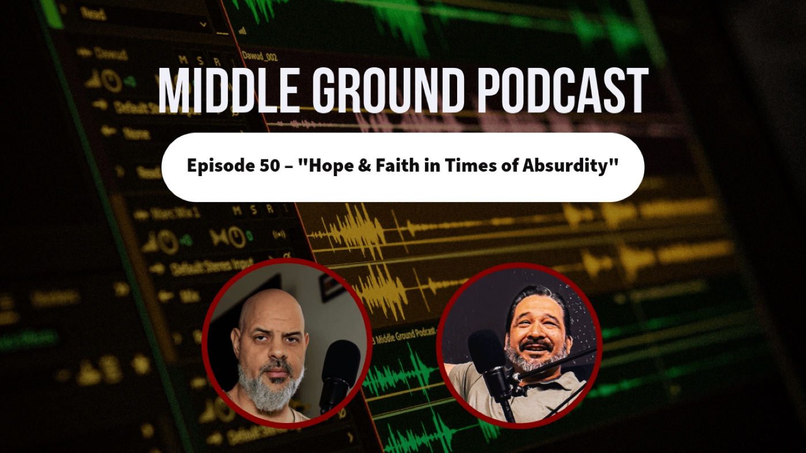
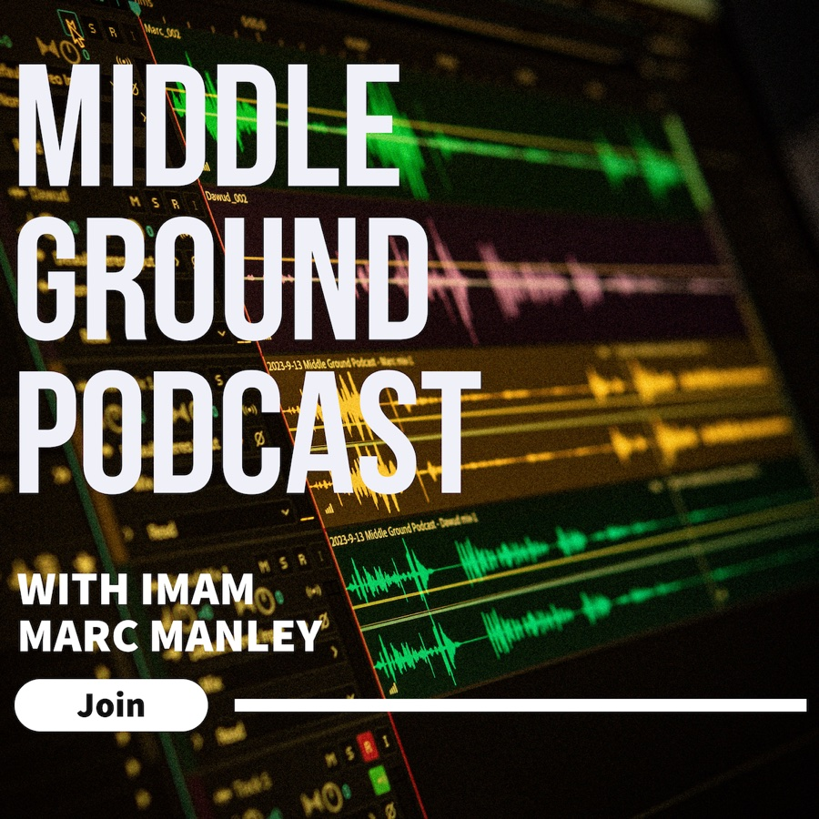

Hope & Faith in Times of Absurdity
Episode 50 of the Middle Ground Podcast

Welcome back! to Episode 50 of the Middle Ground Podcast with Imam Marc Manley and brother Dawud Aleman. We discuss our absences, life in the intervening year or so, and how we still cultivate hope and faith in the ridiculous times we’re living in.

Imam Marc Manley
Middle Ground Podcast

0:00
−3:05
Want new episodes as soon as they’re out? Subscribe to the Middle Ground Podcast to get every conversation delivered straight to your inbox.
Tagged:
Middle Ground Podcast
Hope
Faith
Iman

Written by
Imam Marc Manley
Resident Imam, Middle Ground · Host of the Middle Ground Podcast